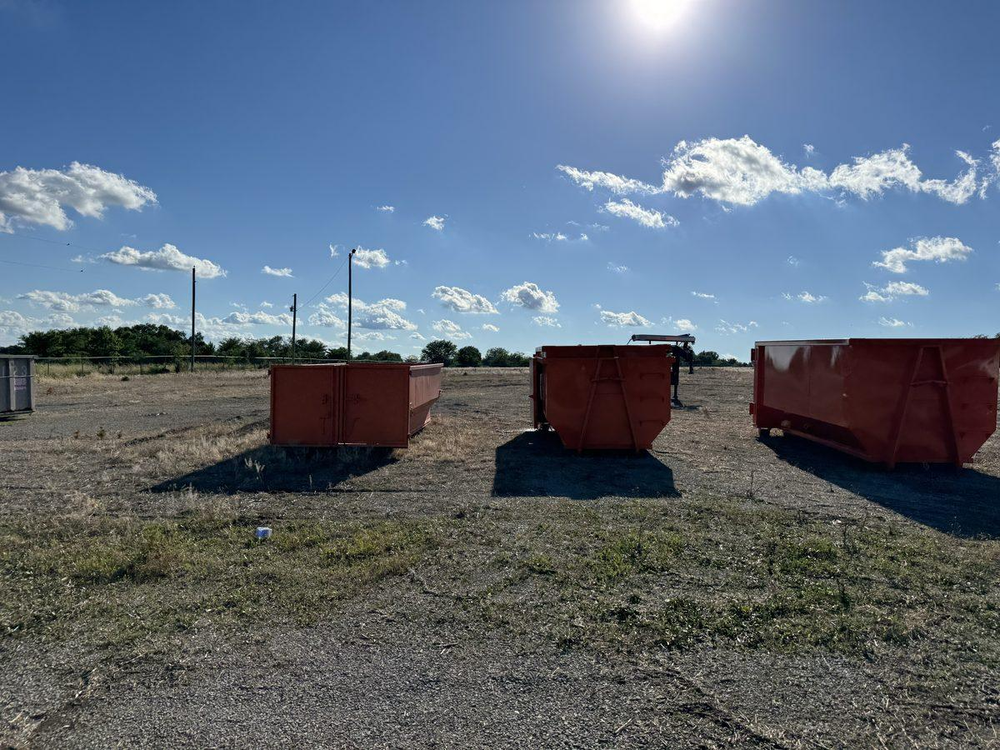
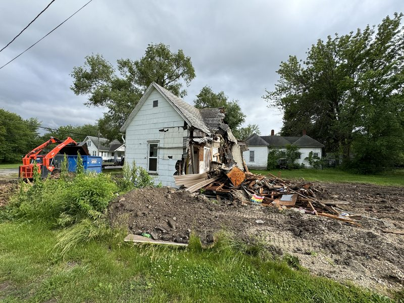
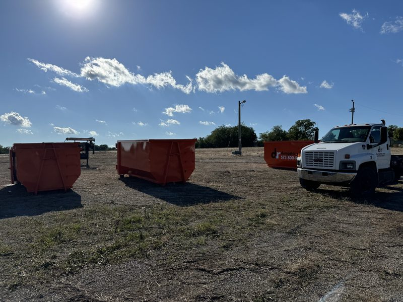

"What does the lot look like when you pull off?" That is the second question I get on almost every teardown, right after price, and it is the one people should ask first.
I'm Chris Kurtz, owner of Atlas Excavation & Demolition in Columbia, MO. We tear down houses, garages, mobile homes, and outbuildings across Boone County and the rest of Mid-Missouri. The teardown is the loud part and it is over in a day or two. Lot grading after demolition is the part that decides whether you end up with a buildable site or a soft dish in the yard that sinks for the next five years. Here is exactly what happens, what it costs, and what to make sure is in your bid.
Quick Answer: Lot grading after demolition in Columbia, MO covers everything that happens once the structure is gone. The foundation comes out or gets broken down below grade, the hole gets backfilled with clean dirt and rock in compacted lifts, and the site gets shaped so water runs off instead of pooling. On a typical residential lot, budget $1,200 to $3,000 when there is enough dirt on site, and $3,000 to $9,000 when fill has to be trucked in. A lot that was compacted in lifts is ready to build on. A lot that was just pushed flat will settle. Call (573) 234-6641 or get your instant estimate.
In This Guide:
What Happens After Demolition: The Four Steps to a Build-Ready Lot
Every teardown we do in Columbia ends the same way, in four steps. If your bid does not spell all four out, you are guessing at the back half of the job.
- Debris leaves the site. Structure, roofing, drywall, flooring, and fixtures get sorted and hauled to the right place. Nothing structural gets buried. More on where it all goes in our guide to demolition debris disposal in Columbia, MO.
- The foundation gets dealt with. Either it comes out whole or it gets broken down below grade. That call drives a big chunk of the cost.
- The hole gets backfilled and compacted. Clean fill only, placed in lifts, packed as it goes.
- The site gets its final grade. Shaped to drain, topsoil back over it, seed and straw if that is in the scope.
Step 4 is where most homeowners get surprised. A demo crew that quotes you "haul-off included" and nothing else can legally leave you with a flat pile of dirt over an open basement. That is not the same thing as a graded lot.
The Foundation Call: Pull It Out or Break It Down
Once the walls are down, the foundation is the decision that sets your number. There are two ways to handle it and they are not close in price.
Full removal. The footings, walls, and slab all come out and get hauled off as concrete. This is what you want if the new build sits anywhere near the old footprint, if you are putting a basement back in the same hole, or if you are selling the lot and want zero questions from the next buyer's lender.
Break down and bury. The walls get knocked down below finished grade, the slab gets busted open so water can drain through instead of sitting in a concrete bathtub, and the broken concrete stays in the hole as clean fill. This is legal, it is common, and it saves real money on a lot that is going back to yard or pasture. It becomes a problem when somebody tries to build over it later without knowing it is there.

My rule of thumb: if anybody is going to build on that spot in the next 20 years, pull it. If it is going back to grass, breaking it down is fine as long as it is documented. Either way, ask for it in writing. "Foundation removed to 24 inches below grade, slab perforated, backfilled with clean fill" is a scope. "Site restored" is not.
Backfill: What Goes in the Hole Matters
Clean fill means dirt and rock. Broken concrete with the rebar cut out counts. Brick and block count. What does not count is wood, drywall, shingles, insulation, treated lumber, or anything else that came out of the house. Organic material rots, and when it rots it leaves a void. A void under your yard becomes a sinkhole two winters later.
The second question is where the dirt comes from. On most Columbia lots there is not enough spoil on site to fill a basement. Do the math on a 1,200 square foot basement that is 7 feet deep and you are looking at roughly 310 cubic yards of fill. A tandem truck hauls 12 to 14 yards. That is 22 to 26 loads, and it shows up on the invoice.
Fill dirt delivered in Mid-Missouri runs about $12 to $25 per cubic yard depending on haul distance and whether you want screened material. If a neighbor or a nearby builder is hauling spoil off a basement dig, we will sometimes bring that over instead, which is cheaper for you and cheaper for them. Ask about it. It is the single easiest way to knock a few thousand dollars off lot grading after demolition.
Compaction: The Step That Shows Up Two Years Later
This is the one that separates a real grading job from a bulldozer pass.
Fill has to go in the hole in layers, not all at once. We place it in lifts of 8 to 12 inches and pack each lift before the next one goes on. Moisture matters too. Boone County clay that is bone dry will not compact, and clay that is soaked turns to pudding under a roller. There is a window, and part of the job is working inside it.
Skip that and here is what you get. Loose fill keeps settling under its own weight, and in heavy clay it can take a year or more to find its level. Disturbed soil left to settle naturally can take far longer than that. You see it as a shallow dish where the basement was, water standing after every rain, a cracked driveway apron, or a new slab that pulls away from the porch.
Building over the backfill? Say so before the fill goes in. Structural fill under a foundation gets placed and tested differently, with a geotechnical outfit running density tests as the lifts go in. That report is what your engineer and the building department will want to see. Retrofitting it after the hole is closed means digging it back open.
Final Grade and Drainage: Where the Water Goes
Grading is not about making the lot look flat. It is about controlling where water goes when it rains 3 inches in an afternoon, which Columbia does a few times a year.
The standard we work to is a fall of about 6 inches over the first 10 feet away from any structure that is staying, sloped toward the street, the ditch, or wherever the lot already drains. On a teardown lot, the goal is to blend the fill back into the existing contour so there is no low spot holding water and no berm pushing runoff onto the neighbor. That second one causes more bad blood in Columbia neighborhoods than anything else we run into.
Then topsoil goes back over it. Four to six inches of it, spread over the fill, so grass or the next crop of vegetation actually has something to grow in. Fill dirt by itself will not grow anything worth looking at. If your lot is headed for a new build instead of a lawn, we leave it at rough grade and let the builder set the finish elevations off the plan. That is where our site preparation services in Mid-Missouri pick up, and on a lot of jobs we just carry straight through from teardown to a pad the framers can work off.

Erosion Control, Seeding, and Closing the Permit in Columbia
A bare lot is an erosion problem until something is growing on it, and in the City of Columbia that is not just good manners. The demolition permit puts the contractor on the hook for installing and maintaining erosion and sediment control on site until the site is stable and non-erosive. In practice that means silt fence at the low side, straw or an erosion blanket on the slopes, and seed down as soon as the grade is finished.
Seeding season matters in Mid-Missouri. Fescue goes down best in early fall or early spring. If we finish a teardown in July, we will usually straw the lot heavy and come back to seed when the weather cooperates rather than throw seed at 95 degree dirt and watch it die.
The paperwork side closes out at the same time. The City of Columbia's Building & Site Development office at 701 E. Broadway handles the demolition permit, and you can reach them at (573) 874-7474. Most building departments will not issue a permit for the new structure until the demolition permit on that parcel is closed out, so a lot that is graded but not signed off is a lot you cannot build on yet. If your property is in unincorporated Boone County, there is no county demolition permit, but the erosion and utility rules still apply. Resource Management is at (573) 886-4330. We walk through the whole process in our guide to demolition permits in Columbia, MO, and you can check current requirements on the City of Columbia permits and licensing page or in the city's demolition permit application.
One more trigger to know about. If your project disturbs an acre or more of ground, that crosses into land disturbance permit territory with the Missouri Department of Natural Resources. Most single house teardowns do not get there. A multi-structure commercial site or a subdivision lot package can.
What Lot Grading After Demolition Costs in Columbia, MO
Real numbers from real jobs around Columbia, Ashland, Fulton, Boonville, and Centralia. Your lot will land somewhere in these ranges depending on access, depth, and how much dirt has to move.
- Push, spread, and final grade using dirt already on site: $1,200 to $3,000 for a standard residential lot
- Backfilling a full basement with imported fill: $3,000 to $9,000, driven almost entirely by yardage and haul distance
- Trucked-in fill dirt: $12 to $25 per cubic yard delivered
- Topsoil placed over the fill: $25 to $45 per cubic yard spread
- Seed, straw, and silt fence: $500 to $1,500 on a typical lot
- Compaction testing by a geotechnical firm: $600 to $1,500, only needed when you are building over the fill
- Full foundation removal instead of break-and-bury: add $2,500 to $7,000
On our teardowns we bundle grading into one flat number so there is no second invoice after the dust settles. That is the same all-inclusive approach we use on the teardown itself, and you can see how the full picture prices out in our house demolition cost guide for Columbia, MO.
When you are comparing bids, the cheap one is almost always cheap because the back half is missing. Read for the words fill, compact, grade, and seed. If they are not in there, they are not in the price.
How Long Until You Can Build on It?
The grading work itself is fast. On a typical residential lot we are talking 1 to 3 days once the debris is gone, assuming the weather holds and we are not chasing a wet week.
Whether you can build on it right away depends entirely on how the fill went in. Placed in lifts, compacted, and density tested, that ground is ready when the report comes back and the demolition permit closes. Dumped and pushed flat, you are waiting on nature. In Boone County clay, expect noticeable settling for 6 to 12 months and minor movement well past that.
So the honest answer is this. If a new structure is going on that spot, pay for the compaction now. If the lot is going to sit, going back to lawn, or selling as a vacant parcel, standard backfill and grade is fine and you save a few thousand dollars.
Frequently Asked Questions
Do you have to fill in the basement after a house is demolished?
Yes. You cannot leave an open hole. In Columbia the site has to be backfilled and brought to a stable grade before the demolition permit closes, and an open excavation is both a safety hazard and a liability problem. What you do have a choice about is how. The foundation walls and slab can come out entirely, or they can be broken down below grade with the slab perforated so water drains, then buried as clean fill. Either way the hole gets filled with dirt and rock, not with debris from the house, and the surface gets graded to drain.
How much does lot grading after demolition cost in Columbia, MO?
Most residential lots run $1,200 to $3,000 when there is enough dirt on site to work with, and $3,000 to $9,000 when fill has to be trucked in for a basement. Imported fill dirt runs about $12 to $25 per cubic yard delivered in Mid-Missouri, and a full basement can eat 300 yards or more. Add $500 to $1,500 for seed, straw, and silt fence, and $600 to $1,500 for compaction testing if you are building over the fill. On Atlas teardowns we quote grading inside one flat number so there is no surprise invoice at the end.
How long do you have to wait to build on a lot after demolition?
If the fill was placed in 8 to 12 inch lifts, compacted as it went, and density tested by a geotechnical firm, you can build as soon as the report is in hand and the demolition permit is closed out. There is no waiting period for properly compacted structural fill. If the hole was simply filled and pushed flat, that is a different story. Boone County clay will settle noticeably for 6 to 12 months and keep moving after that, which is why builders will not set a foundation on untested fill without a geotechnical report backing it up.
Can demolition debris be buried on site as fill?
No. Clean fill means soil, rock, and broken concrete or masonry with the rebar cut out. Wood framing, drywall, shingles, insulation, siding, and treated lumber all have to leave the site and go to a permitted facility. The reason is not just regulatory. Organic material breaks down over time and leaves voids, so a lot backfilled with construction debris sinks in patches for years and will not pass a geotechnical inspection if anyone tries to build on it. Concrete from the foundation is the one exception, and only when it is broken down and placed properly.
Does the demolition permit cover grading and site restoration?
The permit requires it, but it does not pay for it. The City of Columbia's demolition permit makes the contractor responsible for erosion and sediment control until the site is stable and non-erosive, and the site has to be brought back to a safe, stable grade before the permit closes. What the permit does not do is define how much fill, how much topsoil, or whether the lot gets seeded. That is a scope question between you and your contractor, which is why the grading detail belongs in your written bid rather than in the permit paperwork.
Working With Atlas on Lot Grading After Demolition in Mid-Missouri
You now know more about what happens after the teardown than most people who hire for it, and that is the point. The contractor you pick decides whether you get a finished lot or a dirt pile with a permit attached.
Atlas Excavation & Demolition handles teardowns and lot grading after demolition for property owners, builders, and Realtors throughout Columbia, Ashland, Harrisburg, Hallsville, Boonville, Fulton, Centralia, Rocheport, and the rural ground in between. We are licensed and insured, we quote the grading and the haul-off in the same flat number, and we walk the finished lot with you before we pull the equipment off. We answer the phone too, which around here is apparently a differentiator.
Need a Teardown That Ends With a Finished Lot?
Tell us what is coming down and what the lot needs to be when we leave. You get a flat written number that includes the fill, the grade, and the haul-off.
Get Your Instant EstimateOr call (573) 234-6641 and we will come walk it with you.